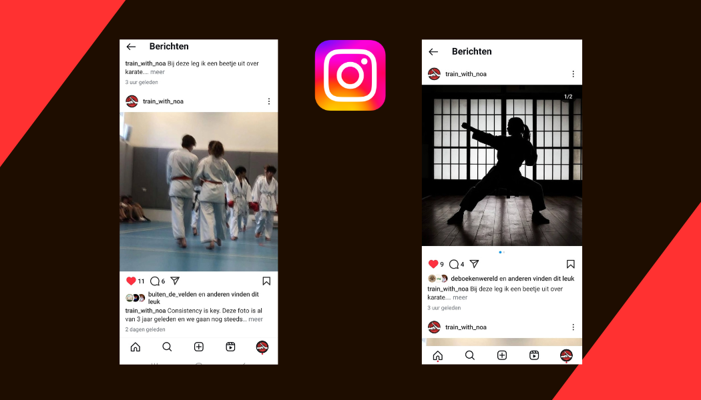
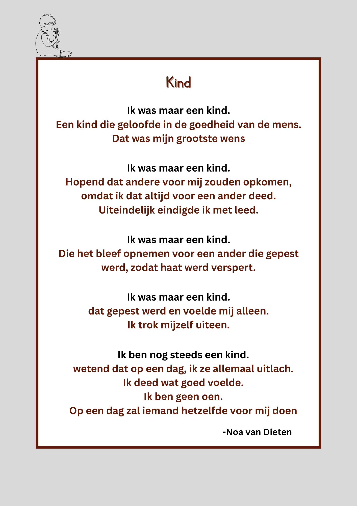

NOA VAN DIETEN
Inhoud
Introductie
Beste lezer, welkom in mijn portfolio. Mijn naam is Noa van Dieten en momenteel studeer ik op het Grafisch lyceum in Rotterdam. Mijn plan is om mijn diploma te halen voor redactiemedewerker en dan door te studeren op de opleiding Film op de Hogeschool voor de Kunsten Utrecht. Als het gaat om schrijven, verhalen bedenken en content maken dan ligt daar mijn passie. In dit portfolio neem ik u mee met mijn ervaringen en laat ik u mijn passie zien. Ofwel: mijn gedachtes en ideeën omzetten in realiteit! Op deze school heb ik erg veel geleerd en nieuwe ervaringen opgedaan.
Met trots presenteer ik het dan ook aan u.
Instarts bedenken
Bij ons op school volg je twee themavakken. Je kan dan kiezen uit verschillende soorten vakken die je wil volgen. Zoals televisie, documentairefotografie, magazine en radio. Voor de eerste periode heb ik gekozen voor televisie. Bij televisie moest je ideeën bedenken voor de aflevering die je wilde maken. Laat nieuwe dingen bedenken nou net mijn specialiteit zijn.
Bij de eerste afleveringen moesten we gaan brainstormen zonder dat de docenten erbij waren. Ik had het voortouw genomen en pakte een pen. Ik liet iedereen aan het woord om zijn of haar idee te vertellen en ik schreef het dan vervolgens op. Zelf had ik ook met een paar mensen bedacht om een sociaal experiment te doen dus die stond ook op ons lijstje. Dit hebben wij uitgewerkt. We hebben bedacht om boeken te laten vallen en te kijken of mensen gingen helpen en hoe ze daarop reageerden. Ik wilde graag de rol op mij nemen om de actrice te zijn. Op mij werd een bodycam bevestigd zodat we verschillende beelden konden krijgen.
Voor de tweede aflevering hebben we veel nagedacht over wat we gingen doen voor de muziek pop vox. Ik had bedacht dat wij een spel gingen maken dat mensen een stukje van een kerstliedje te horen kregen. Vervolgens moesten ze raden welk liedje het was. Het idee was goedgekeurd door onze docent nadat ze ons nog wat feedback had gegeven dat we rekening moesten houden met copyright en dat we goed moesten nadenken over onze doelgroep.
Ik wilde mijzelf uitdagen en besloot de presentator te worden van de instart.
Instart 1
Instart 2
Hier zie je de uitwerking van mijn idee.

Dit was de eerste keer dat ik ging presenteren. Dit vond ik spannend, maar ik wist dat ik dit prima kon. Helaas hou ik de microfoon in de verkeerde hand waardoor ik een gesloten houding heb. Beginnersfoutje. Heb er nu wel van geleerd om het in mijn goede hand te doen.
Natuurlijk wilden wij onze aflevering promoten. Daarom hebben wij een TikTok video gemaakt zodat dit meer kijkers kon trekken.
Tiktok video: https://vm.tiktok.com/
Interviews
Interviewen is een groot hoofdstuk in de opleiding redactiemedewerker. Wij interviewen voor video's of voor tijdschrift/magazine. Ook voor radio en podcast interviewen wij veel. Op straat afstappen op mensen moeten wij ook vaak doen. In het algemeen komt u veel interviewen tegen in mijn gehele portfolio, maar ik zal hier nog een paar fragmentjes zetten.
Opdracht 1
Ik heb een podcast gemaakt over vrouwen rechten. Hiervoor heb ik een mevrouw geïnterviewd (Marjo) die zelf in heel veel opstanden heeft meegelopen en ook veel weet over de acties van de Dolle Mina's. Voor deze opdracht had ik een 9.8 gekregen, erg blij mee.
Podcast:
communicatie en sociale media content
Voor het vak communicatie richten wij ons vooral op het maken van sociale media content. Hoe te communiceren met jouw gekozen doelgroep. Zelf heb ik al veel ervaring met sociale media. Ik vond het altijd al leuk om edits te maken op TiktTok. Zo heb ik wel 6000 volgers gekregen en heeft een edit 1.1 miljoen views gekregen. Op dit account ben ik nu niet meer echt actief, maar ik weet wel dat ik het in mij hebt om een doelgroep te bereiken en kwaliteit te leveren. Voor dit vak moeten wij ook veel presenteren. Zelf heb ik geen moeite om dat te doen.
Opdracht 1
We moesten voor een opdracht een nieuws video maken. Voor mij is het milieu altijd erg belangrijk en heb ik dus gekozen met een vriend van mij om een nieuws video te maken over luchtverontreiniging. Hiervoor speelde ik een wetenschapper en ging mijn vriend mij interviewen. Ik vond het erg leuk om hierbij een edit te maken. Edit maken nou eenmaal veel indruk. De video begint daarom ook met een edit die ik heb gemaakt.
Voor deze opdracht moesten wij ook een Storyboard maken.
En er moest onderzoek naar dit onderwerp gedaan worden. Daarom had ik verschillende bronnen gezocht die ons veel informatie hier over konden geven. Ook had ik er een quote bij bedacht: The sky is not the limit.

Opdracht 2
Bij een quote die je leuk vond moest je een bijpassende video maken. Dit deden we in groepjes van drie. Wij hadden gekozen voor de quote: Good Friends Don't Let you do stupid things... alone. Hierbij maakte we een video over onze vriendschap. Al deze scenes heb ik bedacht.
Opdracht 3
Een opdracht die ik heb gemaakt bij communicatie is een sociale mediacampagne. Ik had gekozen om dit in mijn eentje te doen, want ik wilde dit graag over mijn favoriete sport karate doen. De opdracht was content maken voor sociale media. Je moest doelen stellen die je uiteindelijk wilde behalen en afsluiten met een pecha kucha presentatie. Dat houdt in, een PowerPoint met alleen foto’s en video’s, zonder tekst.
Dit was ons logo.
Hier vertelde ik over mijn huisstijl.
Ik vertelde waarom ik deze twee platformen had gekozen.
De slogan die ik had is: Consistency is Key. Dat liet ik zien met deze foto.
Welke dagen ik wilde gaan uploaden liet ik hier zien.
De doelgroep die ik voor ogen had waren sporters.
Hier liet je 2 post zien van instagram en Tiktok.
Hier liet ik twee TikTok's zien die ik had gemaakt voor mijn doelgroep. De linker video is cynisch bedoeld. De persoon doelt op: Ga naar de keuken toe. En als antwoord daarop kook ik dus een karate bitje, die je in doet tijdens het sparren. In de rechter video laat ik alle banden zien die te behalen zijn in karate. Van wit naar zwart en als eindpunt rood.
Analyseren. Ik wilde meer vrouwen bereiken dus ik maakte een video die meer gericht was op vrouwen die karate doen. Je ziet dat mijn plan is gelukt. Ik had meer vrouwelijke kijkers getrokken.
Hier ging je kijken naar je posts en welke het beste scoorden.
Laten zien hoe groot je bereik was.
Vertellen of je blij was met je resultaten en ja dat was ik.
Magazine
Ook heb ik het themavak magazine gedaan. Dit themavak hield in dat we twee of drie artikelen moesten schrijven waarvan 1 een interview was. Onze artikelen hebben wij ge-edit in Adobe InDesign.
Hier ziet u artikelen die ik zelf heb gemaakt, de eerste (Must listen to) op basis van een interview dat ik heb afgenomen.
Bij dit artikel wilde ik mensen informeren wat muziek met je doet tijdens het sporten. Ik heb hierbij zelf symbolen gemaakt.
Bij dit artikel wilde ik mensen informeren wat muziek met je doet tijdens het sporten. Ik heb hierbij zelf symbolen gemaakt.
Mijn Boek
Ja, mijn boek. Daar vertel ik altijd met trots over. Met dit project ben ik al lang bezig. Er blijven maar nieuwe ideeën komen dus blijf ik maar door schrijven.
Mijn boek is fictie en speelt zich af in een oude tijd. Het verhaal begint bij twee karakters die met veel andere vastzitten op een kostschool. De kotschool is omringd door meters hoge muren, haast onmogelijk om er overheen te komen. Ontsnappen kan je wel vergeten. Sommige hebben nog nooit gezien wat er achter de muur zit en voor sommige is het te lang gelden om het te herinneren. Er vindt een groot toernooi plaats en alles veranderd. Wat zit er achter de muren? Komen ze erachter?
Hier ziet u mijn moodboards van twee karakters:


Fotografie
Je kon een onderwerp kunnen kiezen dat documentairefotografie heet. Dit houdt in dat je een gebeurtenis vastlegt zonder dat deze in scène is gezet. Ik heb ervoor gekozen om het milieu vast te leggen. Zodat je kunt zien hoe mensen langzaam maar zeker het milieu verwoesten. Het is milieu is een maatschappelijk probleem. Daarom wilde ik dit graag aan het licht brengen.
Ik heb altijd al graag gefotografeerd en had nog nooit eerder documentairefotografie gedaan, dus ik vond het erg leuk om er meer over te leren. Hieronder ziet u een paar foto's die ik voor dit project heb gemaakt.
Sigarettenvervuiling: Op deze foto ziet u een berg sigaretten.

Overvolle vuilnisbak: De vuilnisbakken hier zijn overvol en er waait veel weg.

Uiteindelijk heb ik al mijn foto's afgedrukt en ze vervolgens op vuilniszakken gepresenteerd en ze omringd met afval.

Opdracht: foto's maken van gebouwen: Het was een regenachtige dag, dus ik dacht dat het leuk zou zijn om de regen in mijn foto's te gebruiken.

Opdracht: Lijnen zien.

Opdracht: Verboden toegang: plaatsen waar je niet mag komen.


De wereld zien door één oog.

Opdracht: gezicht uitdrukking.


Short Movie
Het maken van een film: dat is iets wat ik heel leuk vind. Ik heb een plan opgezet, bijpassende acteurs gekozen, een locatie geregeld en een oude camera gebruikt om dit tot werkelijkheid te kunnen maken. Helaas is het beeldkwaliteit daardoor matig... Je kan ook zeggen dat het juist een twist eraan geeft!
Een sport waarin ik erg fanatiek train is karate. Ja ik snap dat de meeste mensen gelijk denken aan de karate Kid en ik geef u daar ook groot gelijk in. Maar nee, karate is erg belangrijk in mijn leven. Het zorgde ervoor dat ik niet meer bang was en dat ik wist dat als her erop aan kwam ik mij en mijn vrienden of andere mensen in nood kan beschermen. Ik heb daarom ook gekozen om een korte film te maken over karate, waarin twee personen ieder een eigen urgente redenen hebben waarom ze de wedstrijd moeten winnen.
Ik raad u aan om eerst de speelfilm te bekijken en daarna naar het werk wat erachter schuilt te lezen, want anders zijn er aardig veel spoilers aanwezig.
Short movie: Ik zal winnen
Het Werk Erachter
Eerst ging ik het verhaal opzetten.
Het verhaal
Twee jongens, één winnaar. Quin en Mick hebben beiden hun reden waarom ze willen winnen, waarom verliezen voor beide geen optie is. Het grootste karate toernooi van het jaar is aangebroken. Van alle dojo's zijn de vertegenwoordigers aan het vechten. Quin en Mick verslaan hun tegenstanders stuk voor stuk. Nu staan ze oog in oog met elkaar. Je ziet de ogen van Quin branden met vuur en een sprankeltje angst, want hij staat tegenover de beroemde Mick Rijkswater. Maar hij weet dat hij kan winnen. We worden meegenomen in het verhaal van Quin. We zien hem trainen en leren over zijn verhaal. Hij heeft het nooit makkelijk gehad en heeft altijd veel tegenslagen gehad. Hij leerde een man kennen die hem wilde scouten. De man gebruikt Quin voor wedstrijden, omdat hij ziet dat hij potentie heeft die je niet vaak ziet. De man heeft een deal met Quin gesloten. Win tien wedstrijden op een rij en je krijgt van mij 80.000 euro. Verlies er een en je krijgt niks. Dit is de laatste wedstrijd die Quin moet vechten en hij zijn 80.000 euro kan krijgen. Hij wil het geld dat hij wint gebruiken voor al zijn moeders ziekenhuiskosten. Zijn moeder kan dan eindelijk de medicijnen krijgen waar ze geen geld voor heeft. Hij staat hier op de mat niet voor zichzelf te vechten, niet voor roem of een titel, hij vecht hier voor zijn moeder.
Mick staart Quin met zelfverzekerdheid en een grote druk op zijn schouders aan. Hij voelt in de hoek van de dojo zijn vader en opa op hem neer kijken. Hij is een Rijkswater, verliezen is geen optie. Mick heeft al ontzettend veel wedstrijden gewonnen en kent het woord verlies niet. Als hij deze belangrijke wedstrijd niet zou winnen dan zou hij niet meer bij dojo Rijkswater mogen trainen, niet meer welkom zijn bij zijn familie. Eer, trots en titels dat is waar de Rijkswater familie voor staat. Mick wil zich niet laten verslaan door een of andere jongen die uit het niets opduikt verliezen. Hij moet winnen. Hij zal winnen. Twee jongens, één winnaar.
Vervolgens ging ik de personages omschrijven en bijpassende moodboards maken. Bij de 2 karakters heb ik een tekst geschreven die ik gebruikt heb als voice over bij de film.
Voice over Quin:
“Mijn hele leven is mij verteld dat vechten niet de oplossing is. Praat het uit en geef elkaar de hand. Alsnog... vechten bleek mijn 2de natuur te zijn. Ik leerde dat de zin als je iets wil moet je ervoor vechten. Ik groeide op met weinig geld, een zieke moeder waarvan we nog steeds ziekenhuisrekeningen moeten betalen, weinig eten en koude nachten. Als je iets wil dan moet je ervoor vechten. Het is survival of the fittest. Ik trainde vaak buiten mijn huis om mijzelf af te leiden van de realiteit. Ik leerde vechten vooral op straat. Ik werd vaak lastiggevallen, dat kwam omdat we niet in een al te goede buurt woonde. Het duurde niet lang of ze wisten dat ze niet mij moesten lastigvallen. Vechten is voor mij makkelijk. Het is alsof ik al weet hoe iemand mij gaat aanvallen voordat ze het doen. Natuurlijk kwam ik nooit heelhuids uit gevechten, maar ik won altijd. Op een dag dat ik trainde merkte ik dat ik werd bekeken. Hij liep op mij af en begon een heel gesprek over dat hij potentie zag in mij en dat ik zijn perfecte vertegenwoordiger kan zijn voor zijn karate wedstrijden. Hij wilde mij scouten. Ik had geen interesse, totdat hij begon over geld, veel geld. Zijn plan verliep als volgt: Ik kon trainen met echte bokszakken, een karate pak en privéles. Het enige wat ik moest doen was tien wedstrijden op een rij winnen. Zodat zijn karate school genaamd Lu Jie weer boven aan het leader bord komt te staan. Ik zou een bedrag van 80.000 euro krijgen. Verlies ik een van de tien wedstrijden dan is alles verloren. Dit is mijn laatste wedstrijd, mijn moeilijkste wedstrijd, tegen de beroemde karateka Mick Rijkswater. Ik ben zo ver gekomen, ik zal winnen .”
Voice over Mick:
“Mijn naam is Mick Rijkswater. Zodra ik kon staan leerde ik al vechten. De kunst van karate te begrijpen. Mijn familie bezit de grootste, rijkste, beroemdste dojo van Nederland. Dojo Rijkswater. Een dojo waar alleen de besten van de besten mogen trainen. Mijn opa heeft de dojo opgezet, mijn vader heeft het groot gemaakt. En ik? Ik moet het hooghouden, want als je een Rijkswater bent, dan word je niet zomaar goed, je bent goed. Zo niet dan word je zonder pardon verstoten van de Rijkswater familie. Dat is hard ja, maar de manier van de Rijkswater. Op mijn tiende droeg ik mijn eerste zwarte band. Op mijn vijftiende won ik het Europees kampioenschap voor junioren. Hoe vaak ik ook won, hoeveel beker ik ook binnenhaalde: het was nooit goed genoeg. Vandaag, als ik deze wedstrijd win, zal alles veranderen. De beste dojo's met elk een vertegenwoordiger strijden tegen elkaar. Ik heb tot nu toe alles gewonnen. Net zoals de jongen Quin. Ik had de naam nooit eerder gehoord. Hij kwam uit het niets. Geen titel, geen beroemde dojo alleen gefluister over zijn negen enige toernooien ooit die hij allemaal heeft gewonnen. Hij denkt serieus na negen wedstrijden hierbinnen te kunnen lopen en mij te kunnen verslaan. Ik die al heel mijn leven train voor dit moment. ”Een talent dat je maar eens in de generatie ziet,” werd er gefluisterd. Maar dit gaat mijn overwinning zijn. Ik ben niet zomaar een vechter. Ik ben een Rijkswater. Alles wat ik ben, wie ik ben staat hier op het spel. Verliezen is geen optie. Ik zal winnen”
Verder heb ik al mijn aantekeningen op papier gemaakt. Zoals wat voor scenes ik wil schieten. Veel mensen zouden papier gebruiken inderdaad old fashioned noemen, maar voor mij is het een manier om al mijn ideeën snel op te kunnen schrijven en vrijheid te hebben. De 2 bovenste zijn de eerste versie van de voice over. Linksonder ziet u de scene lijst. Alle scenes die ik wilde gaan schieten. Rechtsonder heb ik een soort tijdlijn gemaakt qua hoe ik wilde dat het ging uitpakken. Dus eerst alle beelden van persoon A (Quin) en daarna alle beelden van persoon B (Mick)
Waar ik tegen aanliep tijdens dit project was toch wel dat ik te veel tekst had voor het aantal beelden. Dit heb ik kunnen oplossen door stiltes tussen zinnen eruit te knippen en onnodige woorden.
Inventarisen
Ik heb drie verschillende dagen gefilmed.
Hier zie je alle scenes van dag 1

Crossmediale campagne
Een crossmediale campagne maken was een eindexamen opdracht op het Grafisch Lyceum Rotterdam. Ik vond dit echt leuk om te doen! Dit kwam omdat je zelf een onderwerp mocht uitkiezen en sociale media-uitingen er moest bij bedenken. Zelf had ik een maatschappelijk aspect gekozen, want dan kan ik er gelijk diepgang bij geven. Mijn onderwerp was Fast Fashion en de gevolgen daarvan op het milieu.
Hier onder laat ik meerdere bladzijdes zien uit dit project en hoe ik erbij kwam. Inclusief het voorblad dat ik gecreëerd heb.


Vervolgens moest je drie uitgebreide artikelen schrijven over je onderzoeksvragen. Die zal ik ervoor nu uitlaten. Het bedenken en maken van zes verschillende media-uitingen was de laatste stap die gedaan moest worden. Ik zal hieronder twee ideeën van de zes die ik heb uitgewerkt laten zien.

Hier de bijbehoren de video en callsheet/script


Dichten is iets waarmee ik begon toen ik niet zo lekker in mijn vel zat. Uiteindelijk heb ik het doorgezet, want het spelen met woorden bracht mij plezier. Het geeft mij een manier om mijn gedachtes, ervaringen en momenten die ik heb en meemaak kan omvormen in tekst. Ik zal een paar gedichten die ik geschreven heb hier laten zien en er een uitleg bij geven.
Gedicht 1 Uitleg
Van jongs af aan is voor mij een ding altijd erg belangrijk voor mij geweest. Dat is het voor elkaar opnemen. Het gevoel dat je weet dat iemand er altijd voor je is, die als jij zelf niet sterk kan zijn er voor jou kan zijn. Ik nam het altijd op voor mensen. Nog steeds. Alleen toen ik naar de middelbare school ging, waren ruzies en argumentaties een ander level. Het was niet leuk. Ik voelde me hulpeloos en zwak.
Ik probeerde sterk te zijn, maar merkte dat ik dat niet in mijn eentje kon. Toen was er een dag dat ik en een vriendin van mij in een hele nare situatie kwamen. Het maakte mij niet uit dat ze mij pestte. Het maakte mij uit dat zij (mijn vriendin) hier moest zijn. Zij is namelijk erg gevoelig en ik merkte dat ze in tranen wilde gaan uitbarstte. Wat mij het meest dwars zat. Was dat de rest van onze vriendengroep van een afstand toe keek. -Waarom komen jullie ons niet helpen, waarom zeggen jullie niks tegen hun, waarom laten jullie ons nu alleen-. Die gedachten zaten erg lang in mijn hoofd, maar ik realiseerde mij dat zij ook bang waren. Alleen ik weet dat als het andersom was geweest ik iets had gedaan. Maar nu zat ik zelf in de situatie. Uiteindelijk had een iemand van de groep er een docent bij gehaald. Alsnog het was geen fijne ervaring klein gezegd. Kort daarna was ik begonnen met karate. En een ding kan ik aan u vertellen. Al zit ik nu in de situatie zelf of ik zie iets gebeuren, ik ben niet bang. Ik grijp in. Net zoals ik deed voorheen alleen nu ben ik ook opgewassen tegen uiteenlopende gebeurtenissen.
Gedicht 2 Uitleg
Ik hou ervan om te leven. Dat klinkt misschien apart hoe ik dat nu verwoord. Maar het is wel waar het op neerkomt. Dit gedicht is geschreven met twee verschillende emoties. De eerste emotie was gericht op een vraag. Waarom willen sommige mensen niet meer leven? Elke emotie die je voelt zou ik zelf nooit weg willen doen. Dat maakt je mens. Ik heb iemand die erg dicht bij mij stond zien worstelen met suïcidale gedachtes. Gelukkig is dat goed gekomen, alleen ik vond het lastig te begrijpen dat je alles op stop wil zetten. Mijn 2de emotie was blijdschap. Ik mag leven en ik ben blij. Er was een persoon op dat moment in mijn leven gekomen die ervoor zorgde dat ik het gevoel had dat ik echt leefde. Dat maakte mij erg blij. Dus die emoties heb ik samen gemixt.
wil je deze portfolio downloaden? klik dan hier onder